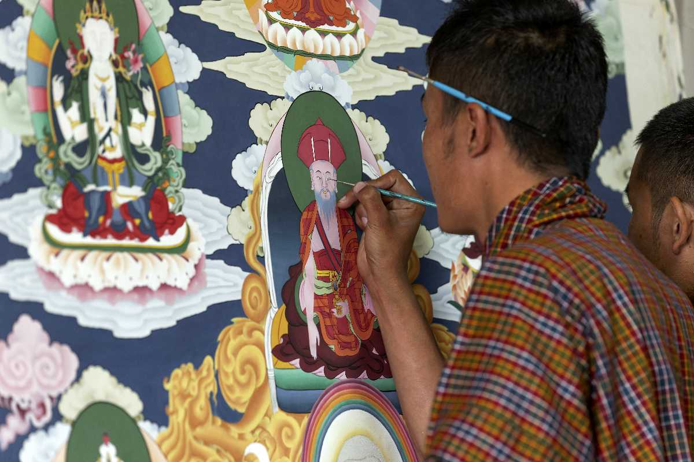

Drawing is one of the oldest forms of human expression within the visual arts. It is generally concerned with the marking of lines and areas of tone onto paper/other material, where the accurate representation of the visual world is expressed upon a plane surface
When I feel like to draw it help me for not getting my time wasting in play phone.I can make my favorate charaters and also colouring the drawing. there are many artics in the world.
The arts or creative arts are a vast range of human practices of creative expression, storytelling, and cultural participation. The arts encompass diverse and plural modes of thinking, doing, and being in an extensive range of media. Both dynamic and a characteristically constant feature of human life have developed into stylized and intricate forms. This is achieved through sustained and deliberate study, training, or theorizing within a particular tradition, generations, and even between civilizations. The arts are a vehicle through which human beings cultivate distinct social, cultural, and individual identities while transmitting values, impressions, judgements, ideas, visions, spiritual meanings, patterns of life, and experiences across time and space.
Drawing is one of the oldest forms of human expression, with evidence for its existence preceding that of written communication.[5] It is believed that drawing was used as a specialised form of communication before the invention of the written language,[5][6] demonstrated by the production of cave and rock paintings around 30,000 years ago (Art of the Upper Paleolithic).[7] These drawings, known as pictograms, depicted objects and abstract concepts.[8] The sketches and paintings produced by Neolithic times were eventually stylised and simplified in to symbol systems (proto-writing) and eventually into early writing systems.
Bhutan has a rich and unique artistic heritage that reflects its deep cultural and spiritual roots. The traditional arts and crafts, known collectively as "Zorig Chusum," are a vital part of Bhutanese culture.
